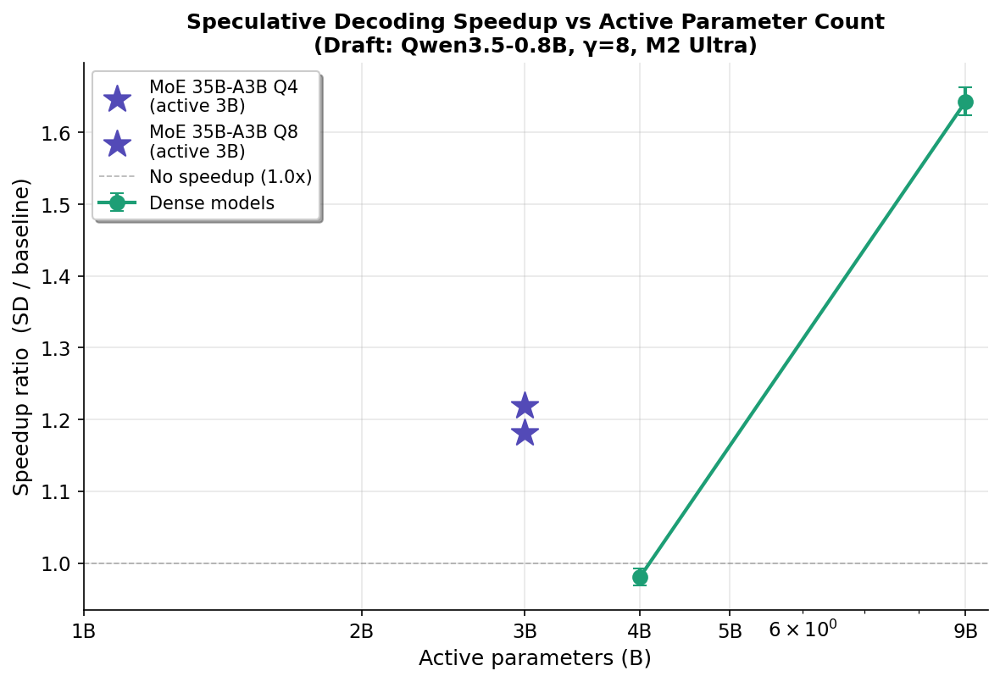
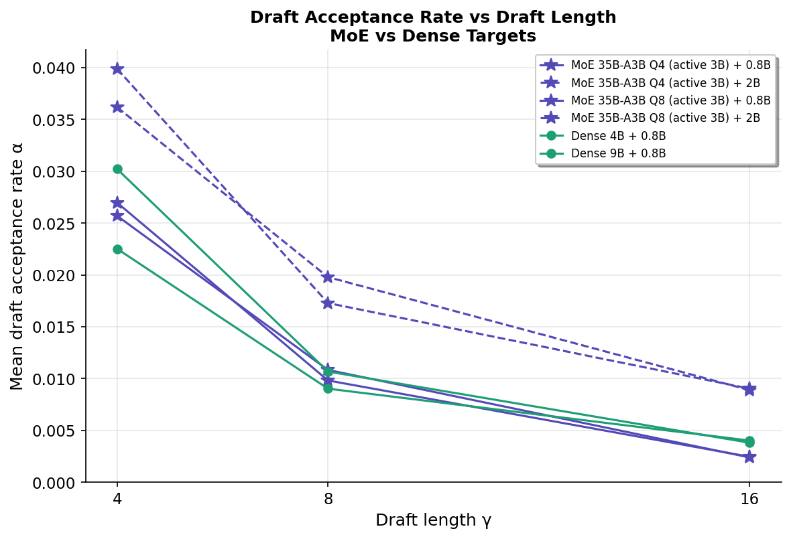
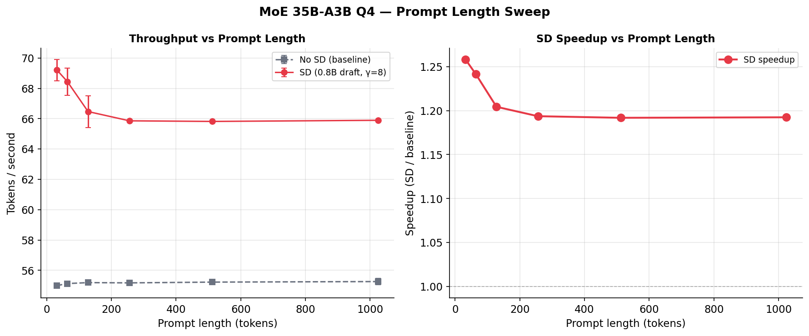
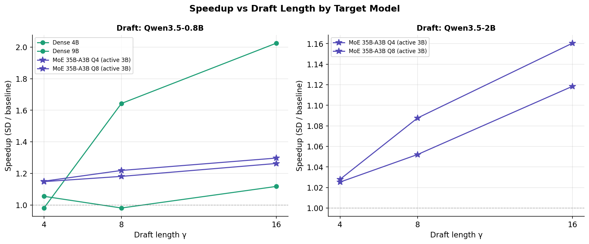

Figures图表

Figure 1: SD speedup vs active parameter count (draft: 0.8B, γ=8). MoE ★ points at 3B active fall above Dense 4B, showing that total parameter footprint (memory bandwidth) drives SD benefit.
图1：SD 加速比与活跃参数数量（draft: 0.8B, γ=8）。MoE ★ 点位于 Dense 4B 之上，表明总参数量（内存带宽）决定了 SD 收益。

Figure 2: Absolute throughput comparison across models and SD configurations.
图2：各模型及 SD 配置的绝对吞吐量对比。

Figure 3: Draft acceptance rate vs draft length γ. All models show <4% acceptance.
图3：草稿接受率与草稿长度 γ 的关系。所有模型接受率均 <4%。

Figure 4: SD speedup vs prompt length on MoE Q4. Benefit is stable (1.19–1.26×).
图4：MoE Q4 上 SD 加速比与 prompt 长度的关系。收益稳定（1.19-1.26×）。

Figure 5: Speedup vs draft length γ by target model. Larger γ benefits all models.
图5：各目标模型的加速比与草稿长度 γ 的关系。更大的 γ 对所有模型都有利。